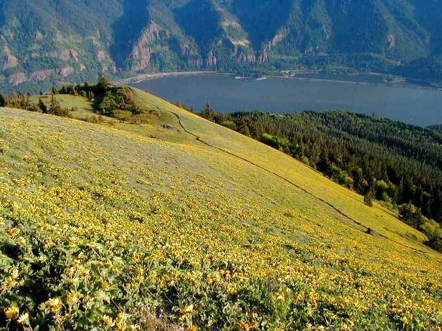
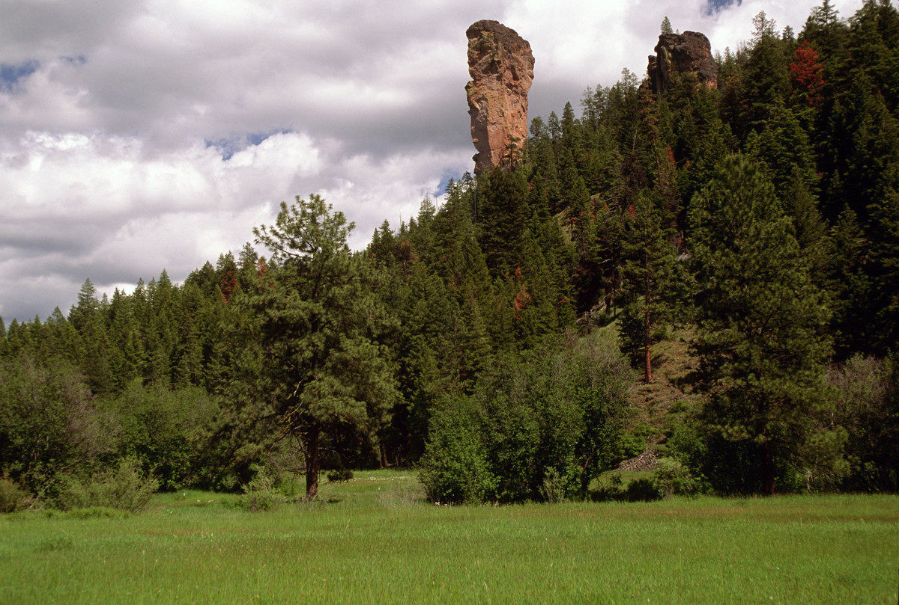
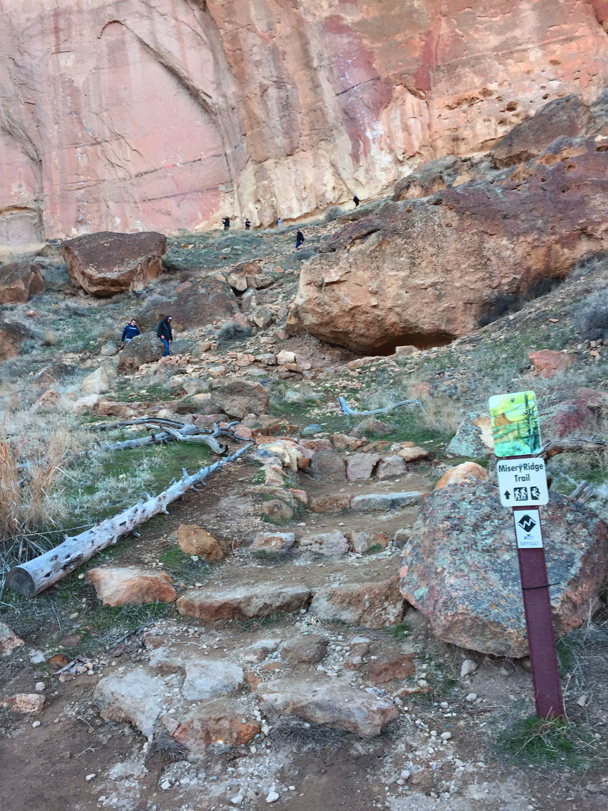
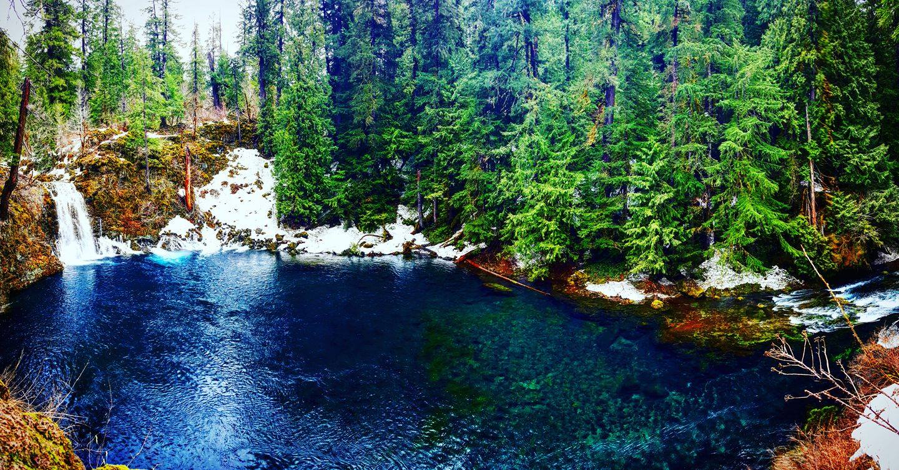
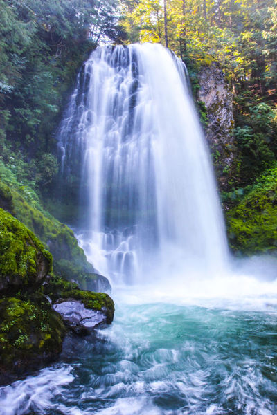

My favorite Hikes around Oregon
These are a few of my favorite spots.
Columbia River Gorge
Here are some of my favorite
hikes
!
Dog Mountian

Central Oregon
Steins Pillar

Misery Ridge-Smith Rock state Park

Cascade Mountians
Tomolitch Falls-Blue pool

Marion Falls

Thanks for reading about all these great hike options!